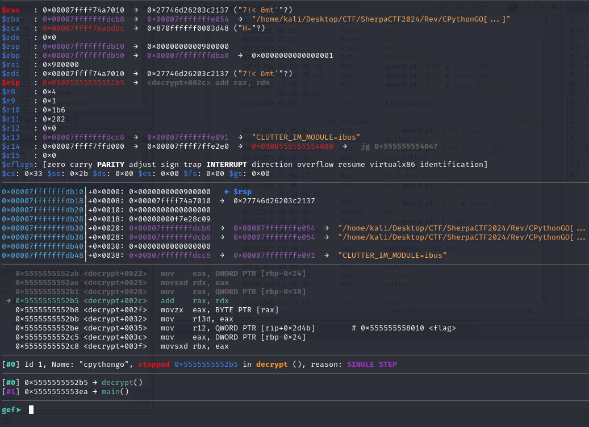
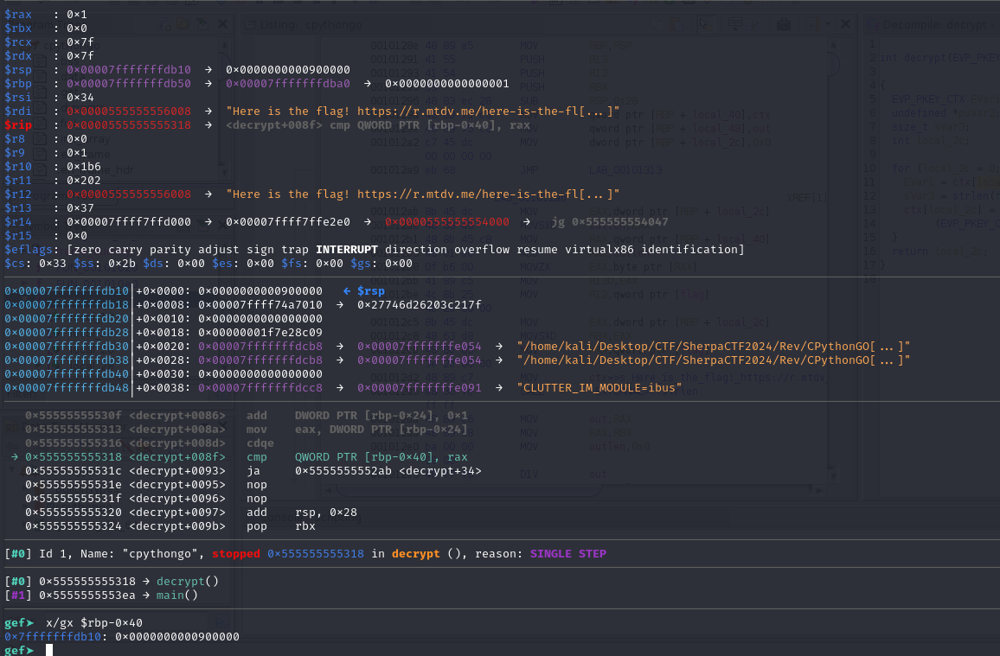
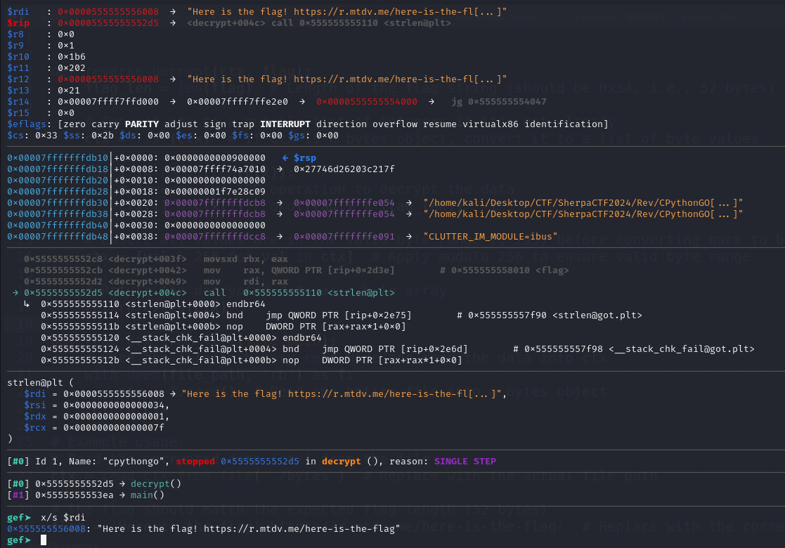
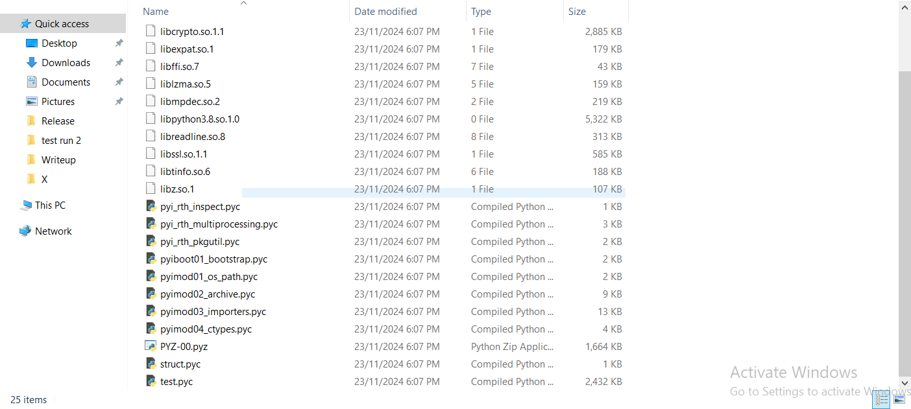
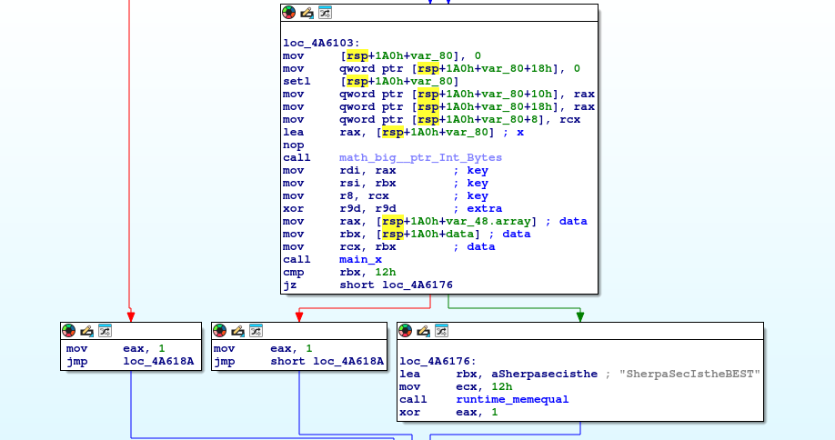
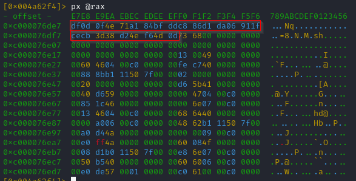
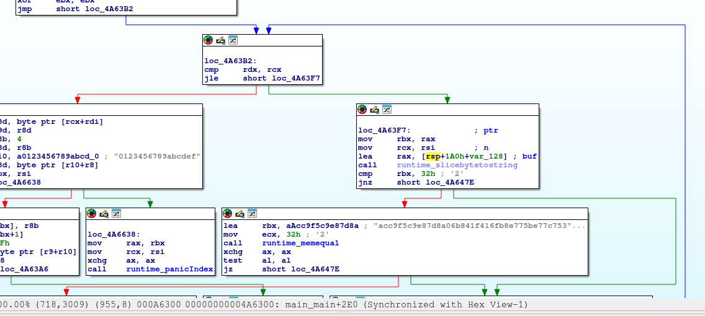
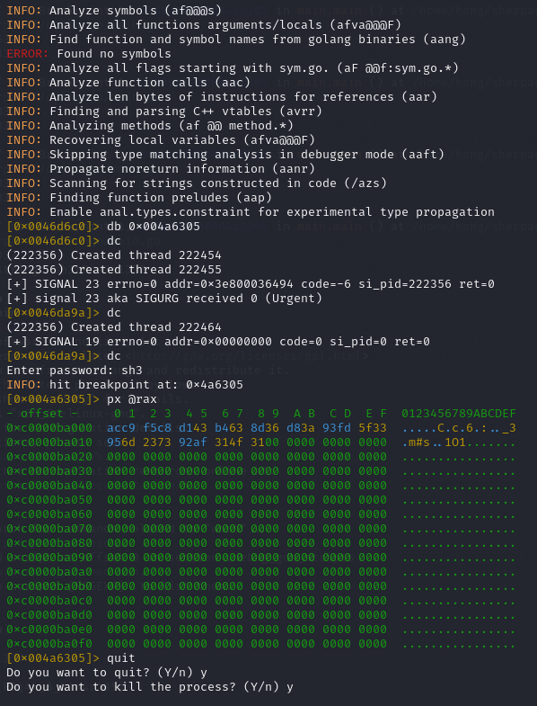
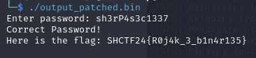

Just wanted to write the writeup for this specific medium rev challenge since I put in quite some time after the event ended to find the flag for this challenge. This will be a lengthy explanation since I want to explain my mindset in each phase of solving this challenge as well.
rev/CPythonGo
From the challenge title alone, I was sort of expecting maybe executables compiled over each other in these 3 different languages, but I definitely was hoping it wouldn't be something like this. And yet, when I first decompiled the file, the feeling that what I have expected came true.
During the initial disassembly analysis by my team member H3R0US1, the biggest thing he noticed was that there is a specific xor function done on 9437184 (0x900000) bytes to a key and xor again with the index it is at.
Key: Here is the flag! https://r.mtdv.me/here-is-the-flag



He extracted the bytes out with gdb and here is the python script that he wrote to reverse the xor to get the python executable file.
def reverse_decrypt(ctx, flag):
flag_len = len(flag) # Length of the flag string (should be 0x34, i.e., 52 bytes)
ctx = list(ctx)
for i in range(len(ctx)):
ctx[i] = ctx[i] ^ ord(flag[i % flag_len]) ^ i
ctx = [val % 256 for val in ctx]
return bytes(ctx)
def read_ctx_from_file(file_path):
with open(file_path, 'rb') as f:
ctx = f.read()
return ctx
ctx = read_ctx_from_file('./bytes')
flag = 'Here is the flag! https://r.mtdv.me/here-is-the-flag'
decrypted_data = reverse_decrypt(ctx, flag)
with open('tmp', 'wb') as f:
f.write(decrypted_data)We can use the pyinstxtractor to extract the python bytecode files out and then use pycdc to translate it back to a readable source code for us. One of the files (test.pyc) that we managed to translate gave us some interesting source code that directly hinted towards the final layer of the challenge.

import ctypes
import os
import base64
import time
import zlib
libc = ctypes.CDLL(None)
syscall = libc.syscall
fexecve = libc.fexecve
# Base64 and zlib decompression
x = zlib.decompress(base64.b64decode(b""))
key = b'CythonGo!'
content = bytearray(len(x))
# Decrypt content
for i in range(len(x)):
content[i] ^= x[i] ^ key[i % 9]
if i != len(x) - 1:
content[i + 1] ^= content[i]
# Assuming the following should execute after the loop
fd = syscall(319, '', 1)
os.write(fd, content)
# Time-based key manipulation
t = int(time.time()).to_bytes(4, 'big')
key = bytearray('SherpaSecIstheBEST', 'utf-8')
# XOR time bytes with the key
for i in range(len(key)):
key[i] = t[i % 4] ^ key[i]
# Prepare the argument array
argv = (ctypes.c_char_p * 2)(
b'SGVyZSBpcyB0aGUgZmxhZyEgaHR0cHM6Ly95b3V0dS5iZS9kUXc0dzlXZ1hjUT90PTQy',
bytes(key)
)
# Execute using fexecve
fexecve(fd, argv, argv)The zlib was decompressing a very huge base64 string so I had to cut it out from here. Based on this long base64 string I can just assume it should be the binary that is compiled in GO. So we can just run a script to decompress the string, and write the bytes back to a bin file. Now when we decompile this file, it's very confusing to read through the assembly since GO is an unfamiliar territory for me especially so I took a long time in trying to understand the whole binary.
From my analysis, we initially had to pass an arguement (look at how the python file passed the key as arguement) and this arguement will get passed into a function called main.x, together with another parameter which is essentially the t variable like how the python file generated the variable. The output of this function will then be compared to "SherpaSecIstheBEST", only allowing us to proceed if it returns true.

So judging by how the python file generated our arguement, I initially thought that the main.x function would be just a simple xor operation. After proceeding to the next instructions, we are now asked to enter a password, and this password will also be passed into the main.x function together with a new key which we can find in the disassembled code.

df0d0f4e71a184bfddc886d1da06911fcecb3d38d24ef64d0d
We can also find what the output from main.x will be compared to this time around

acc9f5c9e87d8a06b841f416fb8e775be77c753edff2354b75
TIP: We can just patch the binary by rewriting the opcode of jz to jnz for the first condition check with "SherpaSecIstheBEST" since it isn't really important anymore and it's better to just bypass it from here onwards
f = open('decrypted_output.bin', 'rb')
f1 = open('output_patched.bin', 'wb')
data = f.read()
data_write = list(data)
offset = 0x4a618c - 0x400000
data_write[offset] = 0x75
f1.write(bytearray(data_write))
f1.close()So, looks simple right? Just xor the expected output with the key and it should give me the password right? Nope, ended up receiving unreadable bytes and it isn't even correct. As long as our input after passing through main.x and comparing to the hex string returns true, we will then be given the flag that is going to be decrypted by a RC4 cipher.
NOTE: The password we enter is very likely to be the key that will be used to generate the RC4 cipher so there's no point in me trying to bypass the condition check by patching the opcode.
After a "not so long" back and forth verfying the register values, only then did I realise that there's more to this main.x function than just a plain xor. So now I'm headed off to try reversing the main.x function which of course, seems really tough to me so I just decided to bruteforce the password instead since after the main.x function returns, we can actually check the bytes pointed by rax which is the hex string that will be compared to the expected hex string. And it also seemed like it's very brute-forcable since each time a new character is guessed correctly, the hex resulted from that character will always stay the same, so I didn't have to generate all possible permutations with itertools instead just increment to the next character when I guess the current one correctly.
NOTE: Thanks to some external help which I have gotten from my friend for the initial foundation of the brute forcing script and he actually did got the password through manual bruteforcing and inspecting the rax.

import gdb
import itertools
import re
class BruteforceRAX(gdb.Command):
def __init__(self):
super(BruteforceRAX, self).__init__("bruteforce_rax", gdb.COMMAND_USER)
def invoke(self, arg, from_tty):
# Address where the program pauses
breakpoint_address = 0x004a6305
# Charset for brute force
charset = "abcdefghijklmnopqrstuvwxyzABCDEFGHIJKLMNOPQRSTUVWXYZ0123456789!@#$%^&*()_=+-"
target_hex = "acc9f5c9e87d8a06b841f416fb8e775be77c753edff2354b75"
# Create the breakpoint
gdb.Breakpoint("*" + hex(breakpoint_address))
max_length = 20
brute_string = ""
for length in range(1, max_length + 1):
for char in charset:
input_string = brute_string + char
print(f"Testing input: {input_string}")
try:
gdb.execute(f"run <<< \"{input_string}\"", to_string=True)
# Continue execution to the breakpoint
# gdb.execute("continue", to_string=True)
rax_value = gdb.parse_and_eval("$rax")
print(f"Address in rax: {rax_value}")
data = gdb.execute(f"x/25bx {rax_value}", to_string=True)
lines = data.splitlines()
hex_bytes = []
for line in lines:
parts = line.split(":")
if len(parts) > 1:
hex_part = parts[1]
hex_bytes += re.findall(r"0x[0-9a-fA-F]{2}", hex_part)
combined_hex = ''.join([byte[2:] for byte in hex_bytes])
if combined_hex[:2*length] == target_hex[:2*length]:
brute_string = input_string
if combined_hex == target_hex:
print(f"Brute force ended, found string: {input_string}")
quit()
break
except gdb.error as e:
# Handle cases where the program exits or the breakpoint isn't hit
print(f"Error for input {input_string}: {e}")
continue
print("Brute force cant find.")
# Register the command in GDB
BruteforceRAX()
Flag
SHCTF24{R0j4k_3_b1n4r135}